Session 1: Fine-tune a model
Everyone does this on their own. One GPU each.
Log in to the supercomputer portal
Go to morehouse.tapis.io and click Log in with single sign-on.
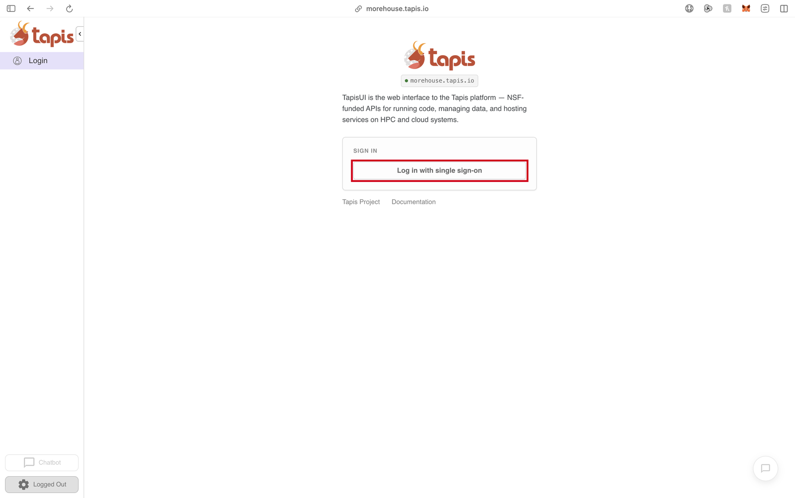
Enter your TACC username and password, then click Log In.
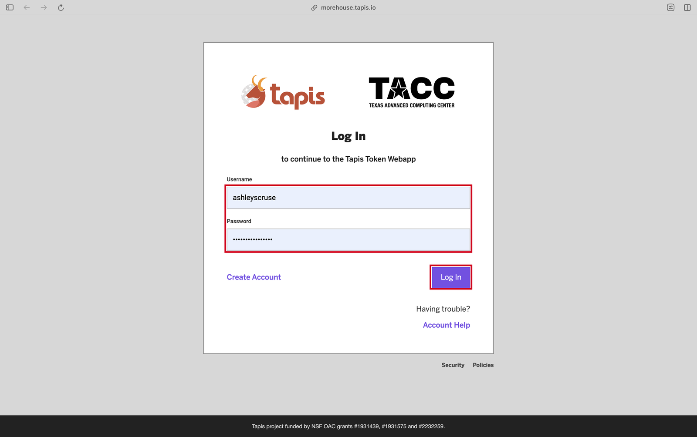
Enter the code from your authenticator app and click Submit.
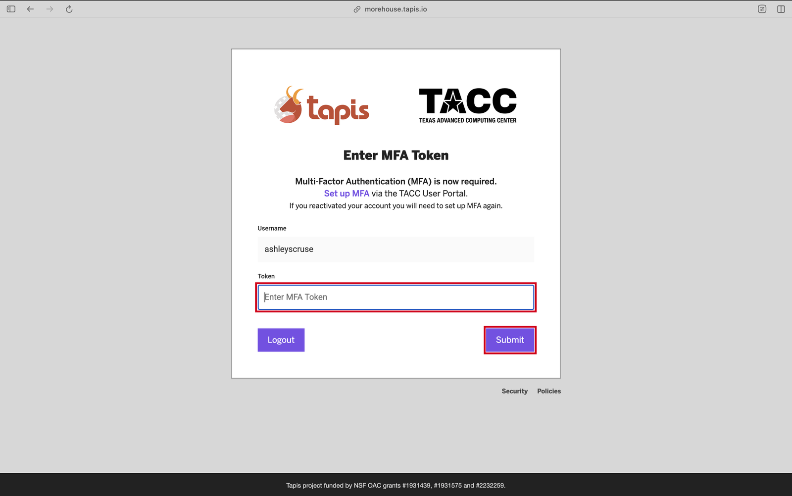
Connect your account to Vista
On the dashboard, click Systems in the left panel.
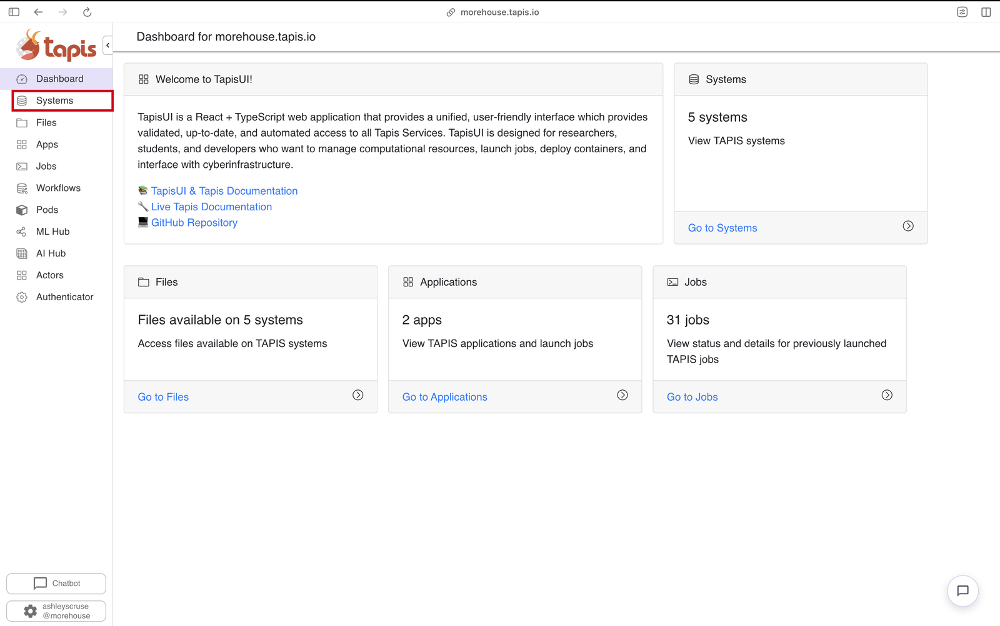
Click vista. If it says you are not yet authenticated, click Authenticate with TMS Keys.
Check it worked: AUTH says hasCredentials: true, ACCESS says listing works, and Browse files shows a list of your folders.
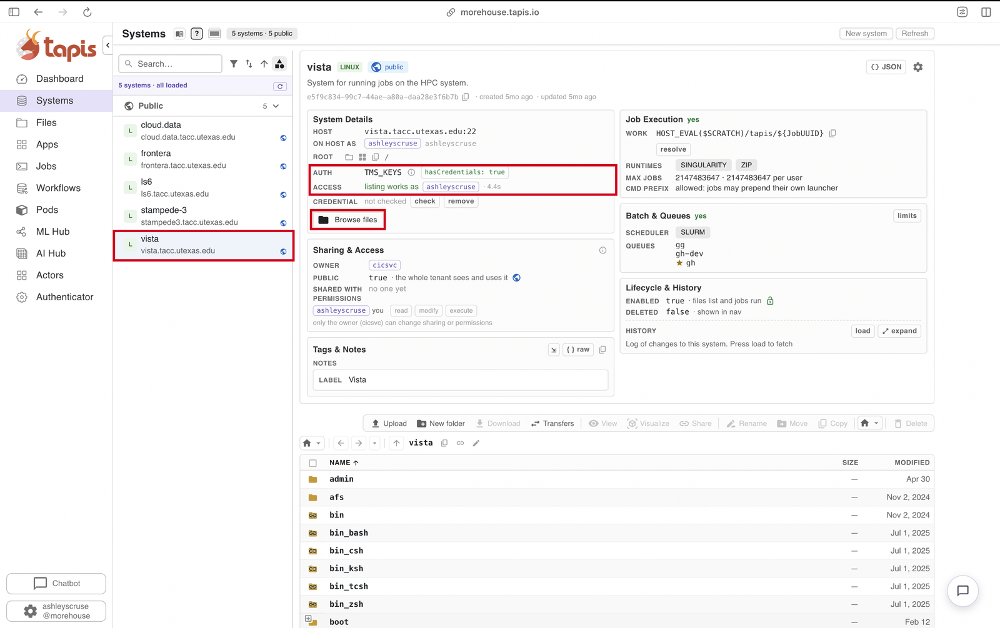
Start your GPU session
a. Pick the app
Click Apps, then click jupyter-hpc-native.
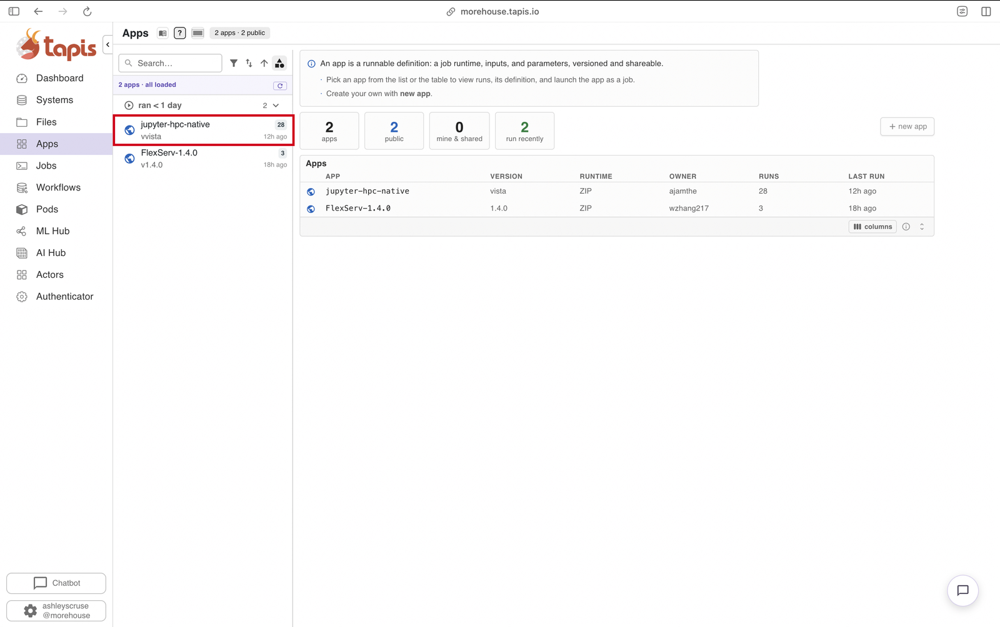
Click submit job at the top right.
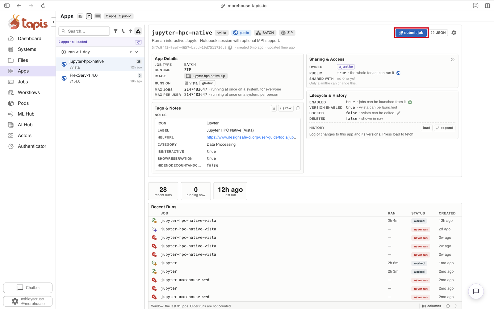
b. Choose the guided launcher
Click Guided job launcher (v2).
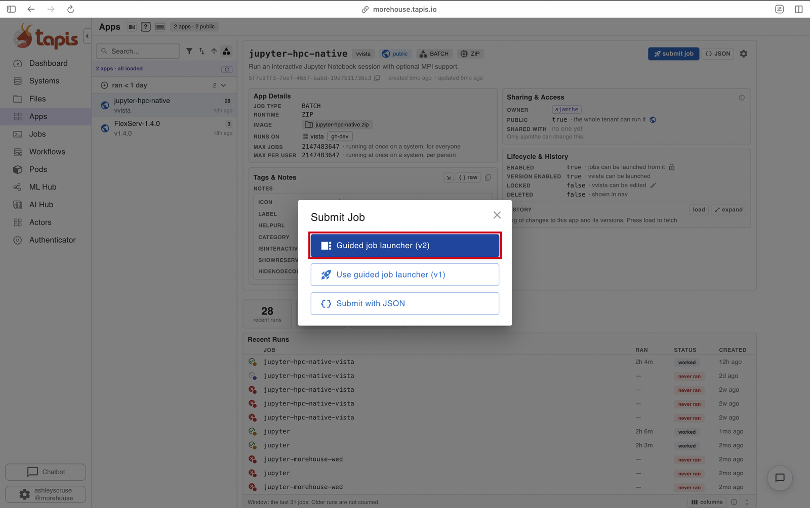
c. Job Basics
Don't change anything. Click Continue at the bottom left.
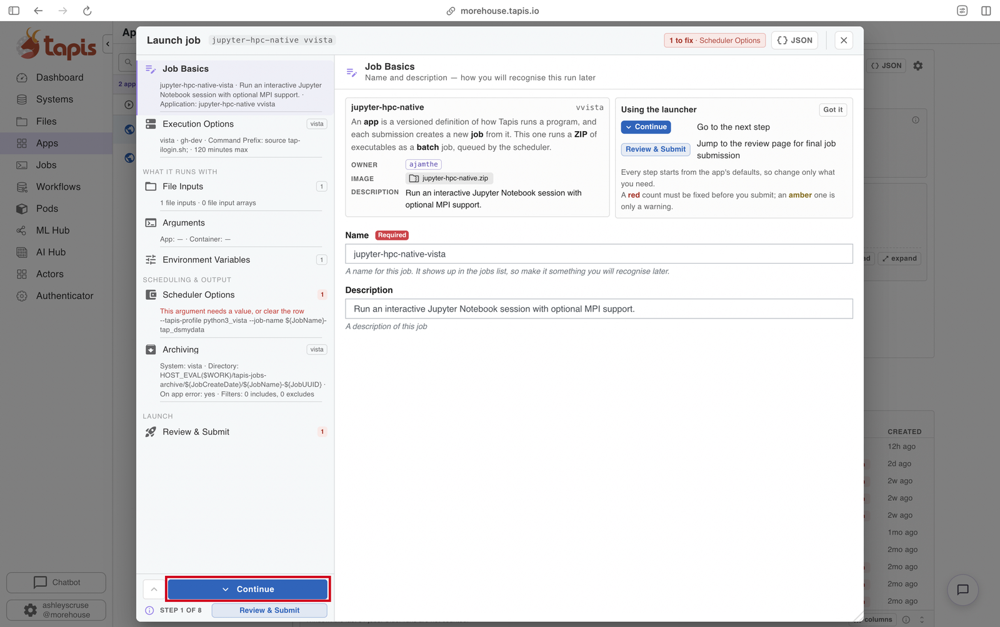
d. Execution Options
Job Type: Batch. Batch Logical Queue: change it to gh (it starts on gh-dev). Node Count: 1. Maximum Minutes: 120. Then Continue.
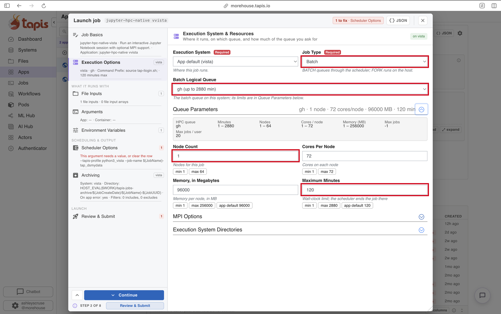
e. File Inputs, Arguments, Environment Variables
Click Continue on each. Don't change anything.
f. Scheduler Options
Make sure the -A allocation and --reservation boxes are checked. Type TRA25008 in the allocation box and inspireGPU in the reservation box. Leave the job name row as it is. Then Continue.
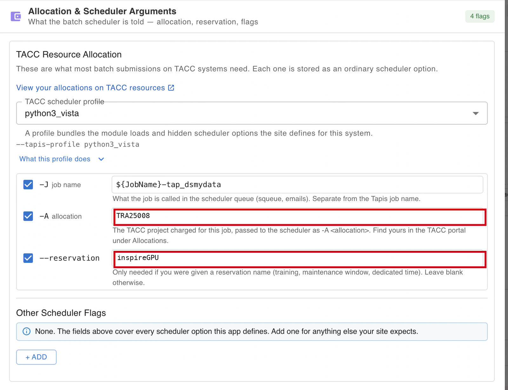
g. Submit
On Archiving, click Continue. On Review & Submit, check that it says The job is ready for submission, then click Submit Job.
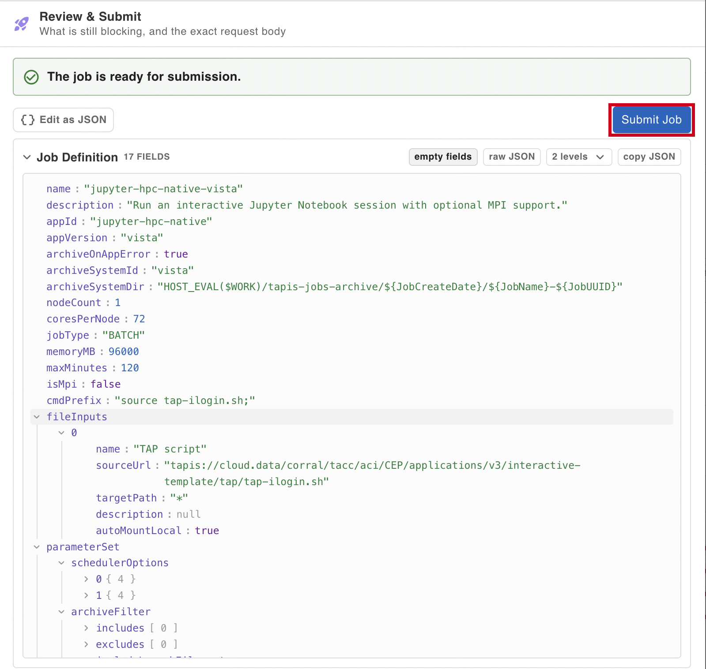
Open Jupyter
Click Jobs in the left panel and click your job. Check that it shows -A TRA25008 and rsv inspireGPU. Its STATUS will change from staging to running.
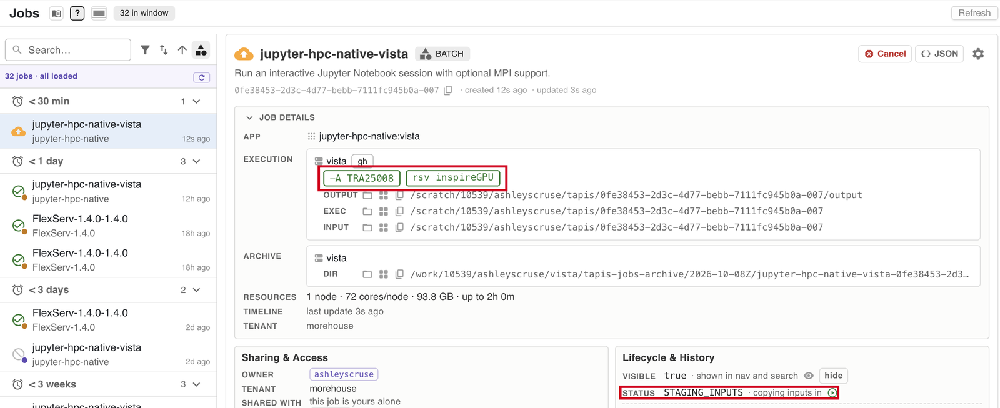
When it is running, click the button to open Jupyter. No button? Open the output file tapisjob.out, copy the address after JUPYTER_URL, and open it in a new tab.
Get the workshop
In Jupyter, click File → New → Terminal and type:
cd $WORK
git clone https://github.com/ashleyscruse/hpc-finetune-workshopThen open hpc-finetune-workshop/notebooks/01-fine-tune.ipynb.
Run it
Click a cell and press Shift + Enter. Go top to bottom. A cell is done when the [*] beside it turns into a number.
Before lunch: end your session
In the portal, open your job and cancel it. This frees your GPU for the afternoon. Your results are saved.
Session 2: Make it faster
You work in a team. Pick your roles first.
| Role | Job |
|---|---|
| Driver | The only person who starts a session. Runs the cells. |
| Recorder | Writes down the team's predictions before anything runs, then the results. |
| Skeptic | Asks why it isn't exactly 4 times faster and checks the math. |
| Reporter | Brings the team's numbers to Lightning Shares. |
Driver: start a 4-node session
You already connected to Vista this morning, so skip straight to the launcher. Same as the morning, but Node Count is 4 and Maximum Minutes is 90.
Click Apps, click jupyter-hpc-native, click Submit Job, then choose Guided job launcher (v2). Go through each page in order (pictures in step 03 above):
| Page | What to do |
|---|---|
| Job Basics | Click Continue |
| Execution Options | Job Type Batch · Batch Logical Queue gh · Node Count 4 · Maximum Minutes 90 · Continue |
| File Inputs, Arguments, Environment Variables | Click Continue on each |
| Scheduler Options | Allocation TRA25008 · Reservation inspireGPU · Continue |
| Archiving | Click Continue |
| Review & Submit | Click Submit Job |
Open the notebook
Open Jupyter the same way as this morning. Your workshop folder is already there. Open hpc-finetune-workshop/notebooks/02-make-it-faster.ipynb and run it top to bottom.
When you're done: end your session
Driver: cancel the job in the portal so the nodes are freed.
Stuck?
Raise your hand. Most problems are one of these:
| What you see | Likely cause |
|---|---|
| Your job waits and never starts | A typo in the allocation or reservation, or you still have another job running |
| "multiple projects" error | The allocation box is empty or unchecked. It should say TRA25008 |
destination path already exists | You already have the workshop folder. Just open it |
| Can't submit, or Browse Files shows nothing | Your TMS keys aren't set up. Redo step 02 |
| "Can't see the shared folder" | Raise your hand |